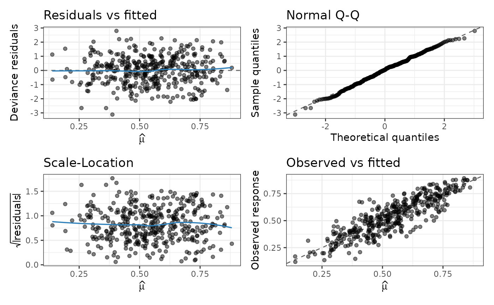

Produces model-diagnostic plots for a fitted "simplex_fast" object using
ggplot2. Up to four panels are available:
Residuals against the fitted mean \(\hat\mu\).
Normal quantile-quantile plot of the residuals, with a reference line through the first and third quartiles.
Scale-location plot (\(\sqrt{|\text{residual}|}\) against \(\hat\mu\)).
Observed response against the fitted mean, with the identity line.
Arguments
- x
An object of class
"simplex_fast".- which
Integer vector selecting the panels to draw, a subset of
1:4.- type
Type of residual used in panels 1-3: one of
"deviance","pearson"or"response". Seeresiduals.simplex_fast().- smooth
Logical; if
TRUE(the default) a LOESS smoother is added to the residual and scale-location panels when there are enough observations.- ...
Additional arguments, currently ignored.
Value
Invisibly, a single ggplot object when one panel is requested, a
combined patchwork object when several panels are requested and
patchwork is available, or a named list of ggplot objects otherwise.
Details
Each panel is a self-contained ggplot object. When more than one panel is
requested the panels are combined into a single figure with patchwork
if that package is installed; otherwise they are drawn one after another. The
(list of) ggplot object(s) is returned invisibly, so the plots can be
further customised or re-arranged by the caller.
Examples
set.seed(6)
n <- 400
dat <- data.frame(x1 = rnorm(n), z1 = rnorm(n))
mu <- simplex_linkinv(0.2 + 0.7 * dat$x1, link = "logit")
dat$y <- rsimplex(n, mu, exp(-0.5 + 0.4 * dat$z1))
fit <- fastsimplexreg(y ~ x1 | z1, data = dat, n_threads = 1L)
p <- plot(fit, which = 1:4)

# 'p' is a ggplot/patchwork object that can be further customised.